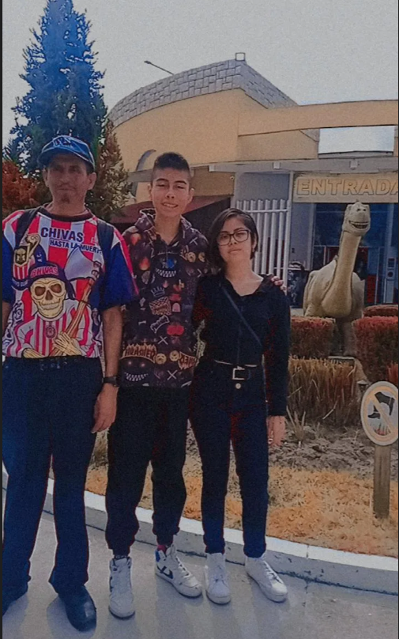

Mi papá:
Él es mi papá. Es una persona muy seria, de pocas palabras, pero con un corazón enorme.
Siempre está cuando lo necesito y muestra su apoyo incondicional en todo momento.
Es el tipo de persona que no presume lo que hace, pero trabaja duro todos los días sin quejarse.
Su esfuerzo, responsabilidad y dedicación me inspiran a ser mejor cada día. Aunque no siempre lo
diga con palabras, su forma de demostrar cariño está en todo lo que hace por nosotros.
